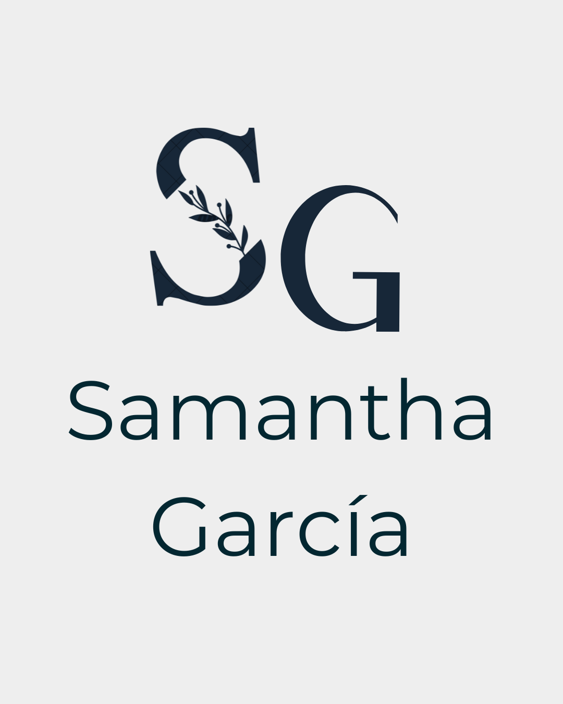

Personal Portfolio
This project is my personal portfolio — designed and developed by me from scratch. I created a visual identity that reflects who I am and used this platform to present my UX and development projects in an intuitive, attractive and functional way.
It’s both a design showcase and a technical demonstration, built with HTML, TailwindCSS and JavaScript.
Context & Challenge
I wanted a space that truly felt like mine — visually and functionally — where I could showcase my skills in both UX and frontend. The biggest challenge was blending branding, clarity, accessibility, and responsiveness in one consistent product.
My Role
- Created my personal brand (logo, color palette, typography)
- Designed layouts and pages in Figma
- Developed the full site using TailwindCSS, HTML and JavaScript
- Made the site responsive for mobile and desktop
- Implemented functional routing, filtering and project views
Research
No formal user research was done for this project, but I performed competitive audits to review common portfolio patterns and find inspiration for structure and features.
Design Process
- Competitive audit
- Wireframes (lo-fi)
- Information architecture
- High-fidelity designs
- Frontend development and testing
Mockups


Learnings
This project helped me polish my frontend skills and solidify my visual design system thinking. I practiced designing with hierarchy, scale and rhythm, while ensuring accessibility and clean code. I also learned how to structure a responsive site from design to deployment.